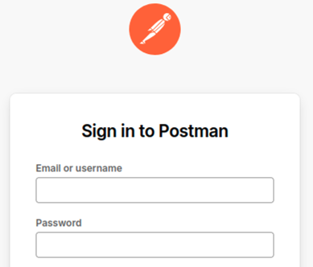
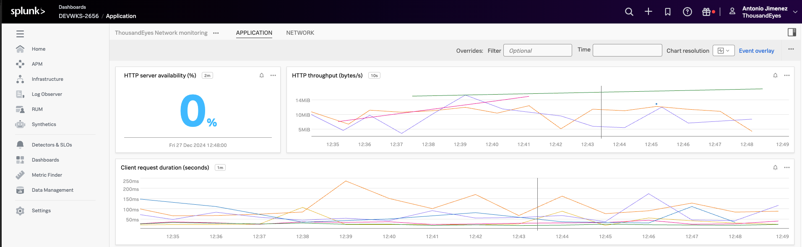
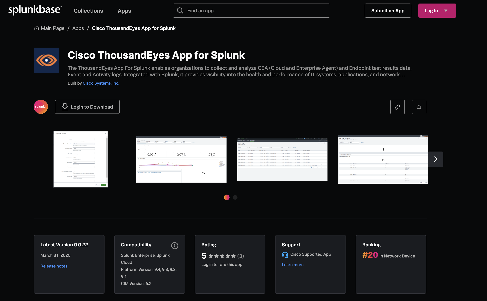
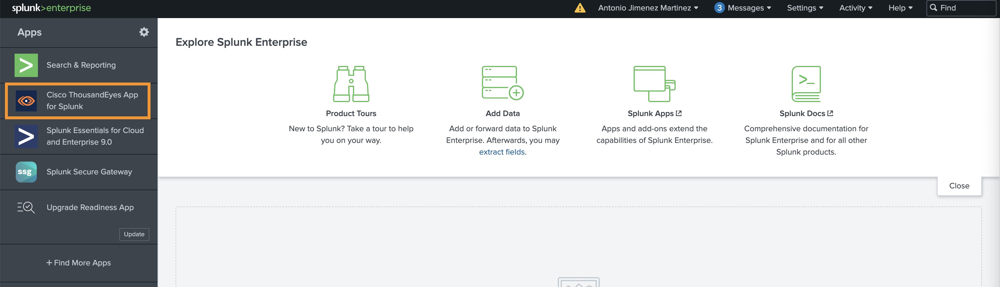
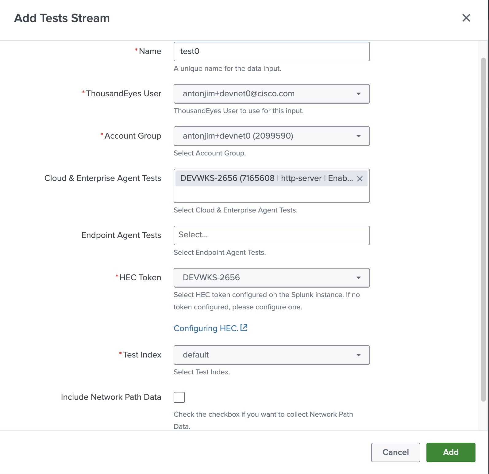
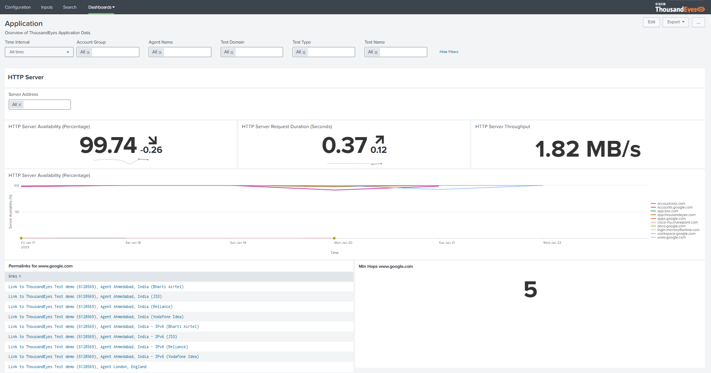
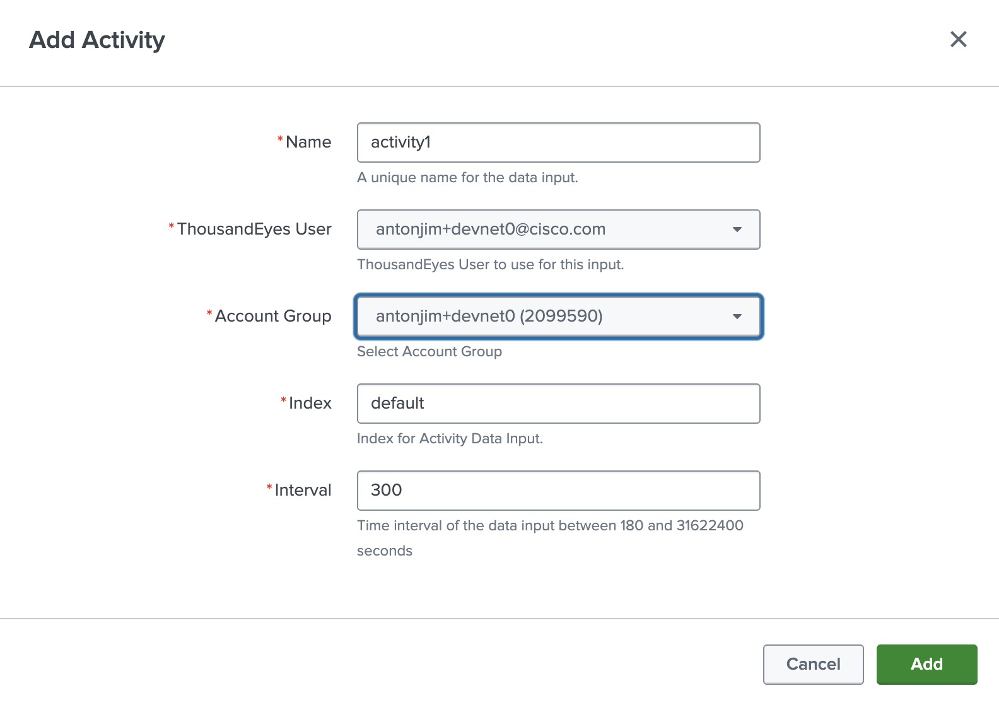
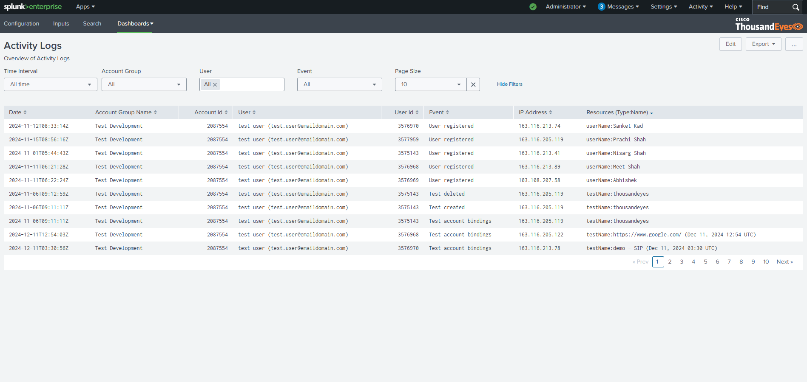

DEVWKS-2656 Stream ThousandEyes Data to Splunk Using OpenTelemetry

Table of Contents
- DEVWKS-2656 Stream ThousandEyes Data to Splunk Using OpenTelemetry
- Table of Contents
- Introduction
- Goals
- Prerequisites
- Step-by-Step Guide - Streaming OTel
- Step 1. Access Postman
- Step 2. Create ThousandEyes HTTP Server test
- Step 3. Create Streaming integration on ThousandEyes for Splunk Observability Cloud
- Step 4. Access Splunk Observability Cloud
- Step 5. Visualize ThousandEyes telemetry data in Splunk Observability Cloud
- Step 6. Create Streaming integration on ThousandEyes for Splunk Enterprise
- Step 7. Access Splunk Enterprise
- Step 8. Visualize ThousandEyes telemetry data in Splunk Enterprise
- Bonus Section - Cisco ThousandEyes App for Splunk
- Step 1. Navigate to Cisco ThousandEyes App for Splunk
- Step 2. Create stream test input
- Step 3. Network and Application dashboards
- Step 4. Create activity log input
- Step 5. Activity logs dashboards
Introduction
Welcome to the workshop for streaming ThousandEyes data to Splunk using OpenTelemetry. This workshop will guide you through setting up integrations between ThousandEyes and Splunk, enabling you to visualize and analyze network monitoring data effectively.
Goals
By the end of this workshop, you will:
- Set up ThousandEyes HTTP Server tests.
- Stream ThousandEyes telemetry data to both Splunk Observability Cloud and Splunk Enterprise.
- Visualize network and application data using Splunk dashboards.
- Explore the advanced capabilities of the Cisco ThousandEyes App for Splunk.
Prerequisites
- Access to ThousandEyes and Splunk accounts.
- Familiarity with Postman.
- Your workshop credentials. Each attendee has a unique login:
- User:
antonjim+devnet<seat>@cisco.com- E.g.
antonjim+devnet1@cisco.com. Correspond with your seat.
- E.g.
- Password:
Cisco.25
Step-by-Step Guide - Streaming OTel
Step 1. Access Postman
- Navigate to Postman
- Sign in 
- Email:
antonjim+devnet<seat>@cisco.com(e.g.antonjim+devnet1@cisco.com) - Password:
Cisco.25 - Navigate to
Workspaces->devnet's Workspace
- Verify the collection
DEVWKS-2656is loaded, including requests and variables.
Step 2. Create ThousandEyes HTTP Server test
For ThousandEyes to be able to stream data to Splunk, the data first needs to be collected by ThousandEyes. To achieve this, we need to create a ThousandEyes test. Refer to ThousandEyes documentation for test creation.
We are going to create an HTTP Server test that validates the availability of www.google.com.
Full description of the API request is available at ThousandEyes API Reference.
- Use the
Create HTTP Server TestPostman request to create the HTTP test
[!NOTE] You can use other
agentIdusing ThousandEyes API List Agents, more info.
- Save the
testIdfrom the response into the variableThousandEyes_test_idin Postman
Step 3. Create Streaming integration on ThousandEyes for Splunk Observability Cloud
- Create a streaming integration for Splunk Observability Cloud. Check the ThousandEyes API documentation.
- Use the
Create Integration - Splunk ObservabilityPostman request to create the stream
Step 4. Access Splunk Observability Cloud
- Navigate to Splunk Observability Cloud

- Email:
antonjim+devnet<seat>@cisco.com- (e.g.
antonjim+devnet1@cisco.com)
- (e.g.
- Password:
Cisco.25
Step 5. Visualize ThousandEyes telemetry data in Splunk Observability Cloud
- In the initial page of Splunk Observability Cloud
- Navigate to
Dashboards
- In
Custom dashboard groups, expandDEVWKS-2656and selectApplication - Visualize the data


Step 6. Create Streaming integration on ThousandEyes for Splunk Enterprise
- Create a stream integration for Splunk Enterprise. Check the ThousandEyes API documentation.
- Use
Create Streaming Integration - Splunk EnterprisePostman request to create the stream
Step 7. Access Splunk Enterprise
- Navigate to Splunk Enterprise

- Username:
antonjim+devnet<seat>@cisco.com(e.g.antonjim+devnet1@cisco.com) - Password:
Cisco.25
Step 8. Visualize ThousandEyes telemetry data in Splunk Enterprise
- In the initial page of Splunk Enterprise
- Navigate to
Search & Reporting
- Search by
index="*" source="ThousandEyesOTel"
- Navigate to
Dashboards
- Select
DEVWKS-2656
- Visualize the data


Bonus Section - Cisco ThousandEyes App for Splunk
The Cisco ThousandEyes App for Splunk enables collectos and analyze: - CEA (Cloud and Enterprise Agent) and Endpoint test results data - Event and - Activity logs

Step 1. Navigate to Cisco ThousandEyes App for Splunk
- Once we are logged into Splunk Enterprise Step 7. Login into Splunk Enterprise
- Navigate to
Cisco ThousandEyes App for Splunk - In the app, you will find out:
configuration,inputs,searchanddashboards. Check the ThousandEyes documentation
Step 2. Create stream test input
- In
inputssection - Click
Create New Input, selectTests Stream - Fill the form:
- Name: unique name, you can use
test_<seat>. For exampletest_1 - ThousandEyes User: select you user
- Account Group: selec your account
- Cloud & Enterprise Agent Tests: select your HTTP test
- HEC Token: select
DEVWKS-2656 - Test Index: select
default

Step 3. Network and Application dashboards
- In the
dashboardssection, selectNetwork - In the
dashboardssection, selectApplication
Step 4. Create activity log input
- In
inputssection - Click
Create New Input, selectActivity - Fill the form:
- Name: unique name, you can use
activity_<seat>. For exampleactivity_1 - ThousandEyes User: select you user
- Account Group: selec your account
- Index: select
default

Step 5. Activity logs dashboards
- In the
dashboardssection, selectActivity Logs